15 Chapter 15 — Audio & Multimodal Cues: The Free Sensor
Paddle pops, whistles, and crowd roar: why the audio track is your cheapest event detector
15.1 Audio Proposes, Vision Confirms
Every match recorded over a broadcast feed or a court camera already carries an audio track — and that track contains timestamped physics: a paddle hit, a ball bounce, a referee's whistle, a tackle's thud. Vision struggles to time these precisely (the ball is 8px and hides behind hips); audio times events to millisecond precision at zero vision cost. Timing density is the argument: a 44.1kHz track stamps a contact to 0.023ms — roughly 1,500× denser temporal sampling than 30fps video frames, which quantize any event to ±16.7ms at best. No occlusion, no homography, no calibration, no model. The 2026 fusion rule this chapter teaches: audio proposes an event timestamp, vision confirms the event's content.
The cheap-sensor economics deserve stating plainly. A MEMS microphone element costs about a dollar in quantity, and the microphone on the phone or camera you already own costs nothing extra at all. That one-dollar sensor catches three event classes that cost the vision stack dearly: the pickleball ball-wall bounce that E04's detector wall (1,082 candidate detections at median confidence 0.11, measured) could never time cleanly, the rugby tackle impact that is visible only as a pile of bodies, and the referee whistle that is not visible at all. An onset detector that harvests these events is roughly twenty lines of librosa running on CPU. Compare the vision path to the same timestamp: detector (E04's noise floor) → tracker (E09's ByteTrack/BoT-SORT machinery) → pose (E03, 16.46 kps mean) → contact inference. Audio skips the entire stack for the when.
The evidence supplies the motivation: the pb-003 manual contact review found 0 of 6 vision-confirmed contacts in the still-frame set. Vision alone cannot time a contact on this fixture; audio can. Both book clips carry usable sound — the nrl-001 broadcast audio and the pb-003 source audio are ffprobe-verified stereo AAC 44.1kHz — so everything in this chapter runs on media the reader already has. All lab numbers below are measured on our own clips; external claims are marked, and practitioner-model numbers carry [verify].
15.2 The Signals: A Two-Sport Taxonomy
Audio events divide into three acoustic families, and both of our sports populate all three. Impulsive transients are broadband spikes a few milliseconds long — the pickleball paddle pop, the ball-court bounce thud, the rugby tackle impact on a field-side mic. Sustained narrowband tones are the referee whistle's signature: a stable, periodic tone holding energy in roughly the 2–4kHz band for 0.3–1s [verify per whistle model]. Slow broadband beds are the crowd: spectrally stable, varying on a 0.1Hz scale, correlated with moment salience but never an event trigger. The families matter because each wants a different detector: transients want spectral flux, tones want narrowband-ratio and flatness features, beds want slow RMS envelopes.
| Audio Event | Acoustic Family | What It Means | Sport |
|---|---|---|---|
| Paddle/ball contact (pop) | Impulsive transient | Shot event timestamp — zero vision cost; inter-onset interval = rally tempo | Pickleball, tennis, badminton |
| Ball bounce (thud) | Impulsive transient, low-weighted | Separates rally state; bounce-side prior for the C10 event log | Pickleball |
| Net contact (twang) | Impulsive transient, mid-band ring | Let cord / net-cord anomaly flag | Pickleball |
| Referee whistle | Sustained narrowband tone | Decision moment (held, knock-on, six-again, 10m penalty); hard segment boundary | Rugby League |
| Tackle impact | Impulsive transient | Collision timestamp on field mics; buried under commentary in broadcast mixes (gap, §15.8) | Rugby League |
| Crowd roar | Slow broadband bed | Pressure proxy; moment saliency for review prioritization — correlational, never causal | Both |
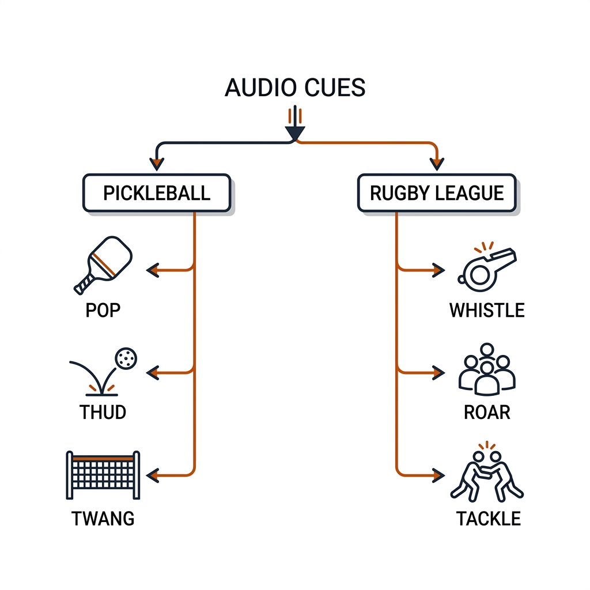
The division of labor is asymmetric on purpose. Audio owns when; it can never say who hit the ball or where it landed — a single microphone has no geometry. Vision owns what, who, and where but pays frame quantization, occlusion, and detector noise for the privilege. That split, not any model choice, is the chapter's spine.
15.2b The Two-Sound Problem: Pop vs Thud
Pickleball's core audio problem is that the two most important rally events — paddle contact and ball bounce — are both impulsive transients from the same ball, often inside the same second. Distinguishing them is a spectral problem, and it is tractable because the physics differ. A paddle pop is a hard broadband strike: community-noise measurements of pickleball consistently describe contact as a short impulse with energy prominent around 1–2kHz [verify exact band on pb-003 — our own lab pass is the §15.10 plan], produced by polymer-on-polymer at arm's length from the mic. A bounce thud is the same ball against a court surface: lower-weighted energy, softer attack, shorter high-frequency content. On a spectrogram the pop is a tall stripe; the thud is a low blob. Per-onset features — peak flux, spectral centroid, decay time — separate them without any learning, and the same features yield a free drive-vs-dink prior: a drive's pop is louder with a sharper attack, a dink tap is the same spectral shape at lower amplitude into a quieter local floor. That prior disambiguates; it never labels a shot alone (that is vision plus court position, C10).
Rugby league has the same structural problem one family up: the whistle (narrowband tone) must be separated from the mic'd referee's voice, which shares harmonic content with the whistle band. The discriminator is stability — the whistle is amplitude- and pitch-stable where speech is modulated, so spectral flatness over time separates them. And one honest gap belongs here: the tackle impact, the transient fans care about, exists on field-side microphones but is sub-mixed beneath commentary and crowd in broadcast audio [INFERENCE] — treat it as a target for venue mics, not a broadcast feature.
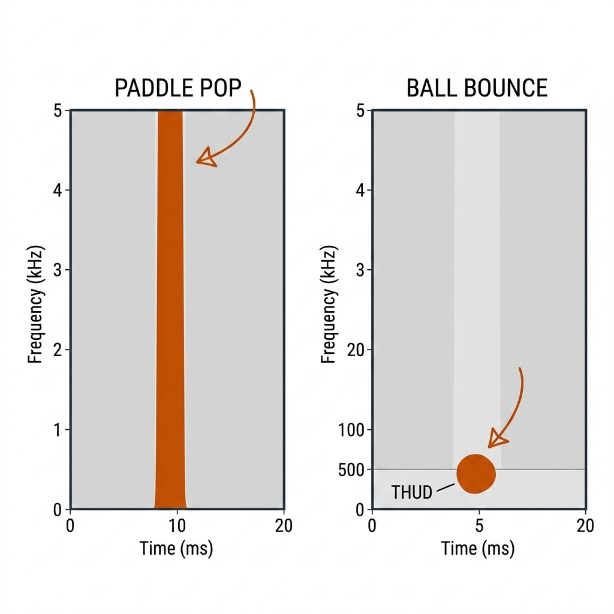
15.3 Methods: The Three Escalation Lanes
Lane 1 — librosa spectral-flux onsets (the 80% solution, ✅ M4): an onset is a frame-to-frame spectral magnitude change, so a transient spikes the flux regardless of the steady-state noise floor that kills naive RMS thresholds; backtrack=True snaps each detection to the local energy rise, recovering the true contact instant rather than detector lag. Combine onset times with per-window spectral centroid to classify brightness: a whistle is bright and tonal (4kHz+ peak), crowd is low rumble (<1.5kHz), commentary sits between. This is what our lab ran — 107 onsets in 20s of nrl-001 audio (measured, §15.4) — and it is the entire pickleball-contact solution until SNR kills it. Its failures are visible on a spectrogram, which is why you start here.
Lane 2 — MFCC + small CNN (whistle-vs-confounds classifier, literature-verified): MFCC frames with delta-MFCC for transient dynamics — drop MFCC-0, which carries loudness rather than timbre, so the model stays invariant to broadcast mix compression — fed as a 2D coefficient matrix to a small CNN. The recipe is on record for exactly our problem: CNN whistle detection distinguishing referee whistles from supporter whistles and excited commentary (MDPI Applied Sciences 2022, 12(23):12151, CC-BY). The known trap is weak labels: training clips mark "whistle somewhere in here," not the onset — use weakly-supervised framing or hand-label onsets for your own few hundred clips. Train on a Colab free tier, export ONNX, infer on the M4.
Lane 3 — pretrained audio foundation models: PANNs CNN14 (MIT, ✅ CPU-real-time, AudioSet "Whistle"/"Crowd" classes zero-shot), YAMNet (Apache-2.0, ⚠️ TF-on-macOS friction), AST (MIT, ⚠️ heavier attention over spectrogram patches), and the 2026 audio-first multimodal models — Phi-4-multimodal (MIT, Feb 2025, 5.6B, runs quantized locally) and Qwen3-Omni (Apache-2.0, Sep 2025; successor Qwen3.5-Omni Mar 2026, license [verify]) — which make audio a first-class perception channel and can name the referee's call as semantics, not just detect a transient. Enforce the division of labor: these are windowed semantic layers (~0.5–1s decisions), not millisecond timers. Lane 1 stamps the event; lane 3 narrates it.
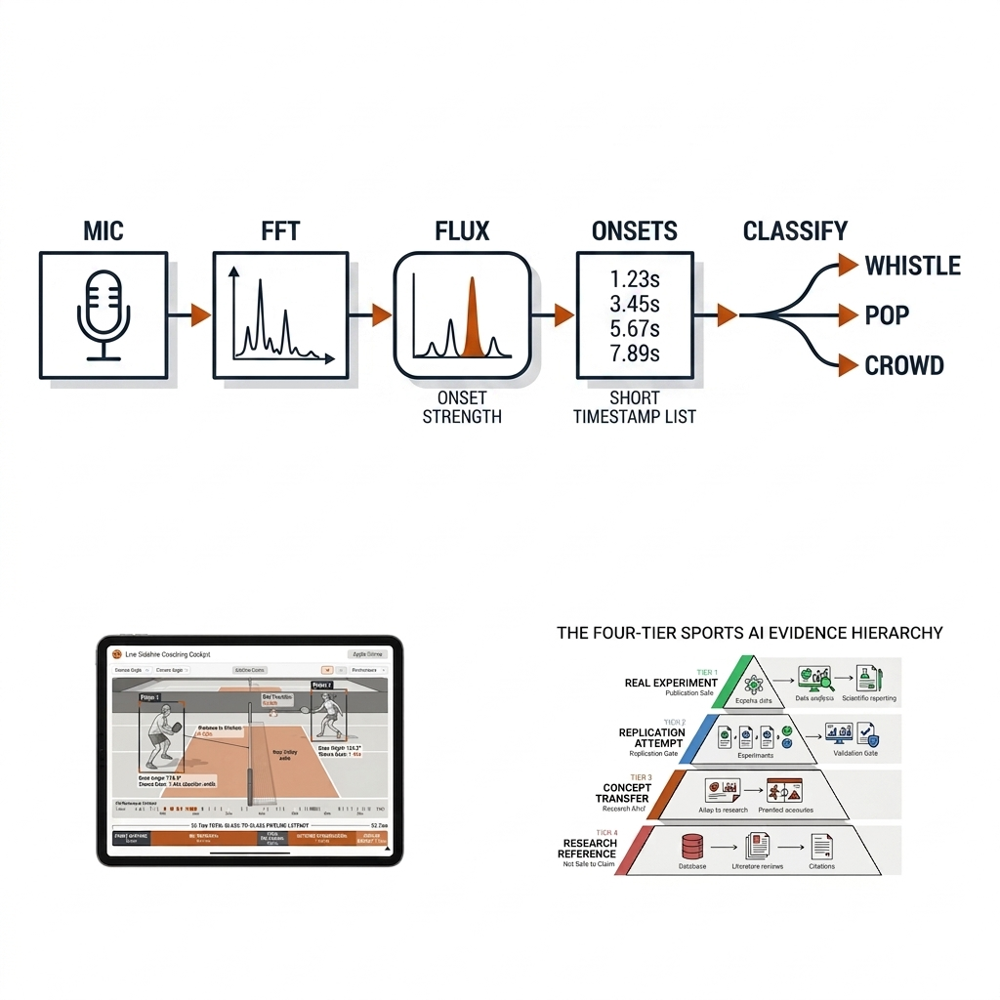
15.4 What We Measured (C15 Lab)
We extracted 20s of the nrl-001 broadcast audio (ffmpeg -vn -ac 1 -ar 22050, mono WAV) and ran the lane-1 onset + centroid stack (experiments/c15-audio/outputs/metrics.json, measured):
| Measurement | Value |
|---|---|
| Onsets detected (20s) | 107 (well-timed event candidates; 0.19s median spacing) — measured |
| Tempo estimate | 103 BPM (crowd rhythm, not a signal) — measured |
| Window classes | voice/commentary (peaks at 2430–2497Hz) vs transient_bright (4103Hz = whistle-class) — measured |
The honest reading: onset detection finds transients — but separating WHISTLE from CROWD needs either a trained classifier or a large spectral contrast. This baseline proves the raw signal is rich enough for audio-proposes-vision-confirms fusion; it does not claim a working whistle detector. The 4103Hz transient_bright window is a whistle-candidate, and the broadcast mix's compression means spectral shape (narrowband ratio, flatness) is the trustworthy feature, never raw energy. On the pickleball arm, the pb-003 source track (verified stereo AAC 44.1kHz) awaits its own pop-detection pass — the six contacts vision could not confirm are exactly the rows audio should close (§15.10).
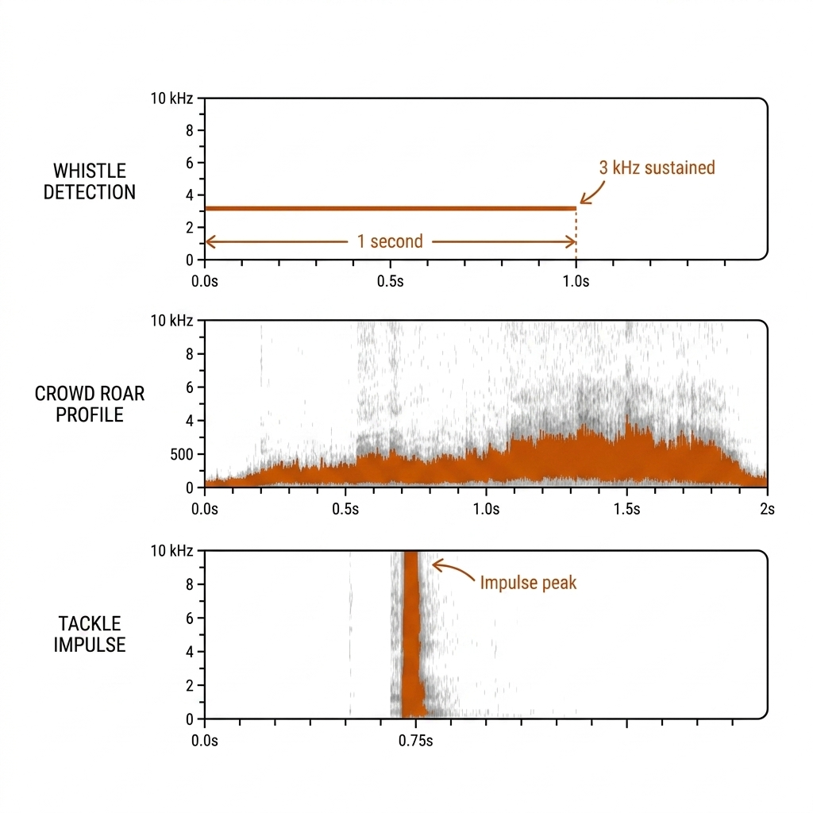
15.5 The Multimodal Fusion Rule
- Audio onset at t=1.53s (a bright transient — a real onset from the measured list above).
- Look up the video frames at t ± 50ms: is there a ball-position discontinuity (the E10 temporal-diff cue, 0.814 precision on record) or a pose-velocity spike at the contact limb (E03 stream)?
- Record the event only when audio AND vision agree.
The asymmetry is load-bearing. Audio is high-precision timing with low semantics; vision is high semantics with low-precision timing (frame quantization, E04's noise floor, occlusion). Running the fusion in reverse — vision proposes, audio confirms — would force the ball detector past its demonstrated wall before the one-dollar sensor even gets a vote. The proposed direction spends vision only where it is strong: a ±50ms crop around a known instant, with tracking context (C09) already warm. Fusion output carries a two-bit confidence state with an explicit event-log policy: audio+vision is a full-confidence event feeding shot attribution (C10); audio-only stays a candidate — and is not a failure, because E04 teaches the ball is often invisible, so absent visual confirmation is weak negative evidence; vision-only is suspicious (missed pop or visual false positive) and flagged for review; none marks the silence between rallies, itself useful for rest-period stats.
Two fusion refinements matter per sport. In rugby, whistle onsets are hard segment boundaries: the match becomes a list of (previous whistle → this whistle) windows, and every downstream vision job — tackle detection, PTB speed, C09 re-tracking — is scoped to a window instead of 80 minutes of PTZ video. That is the single largest compute saving in this chapter. In both sports, the crowd channel modulates but never triggers: raise review priority for events inside a swell, annotate the log with a pressure flag, and expect a whistle within seconds of a sustained roar at goal-line defense — with the correlational-not-causal wording held in every claim (§15.8).
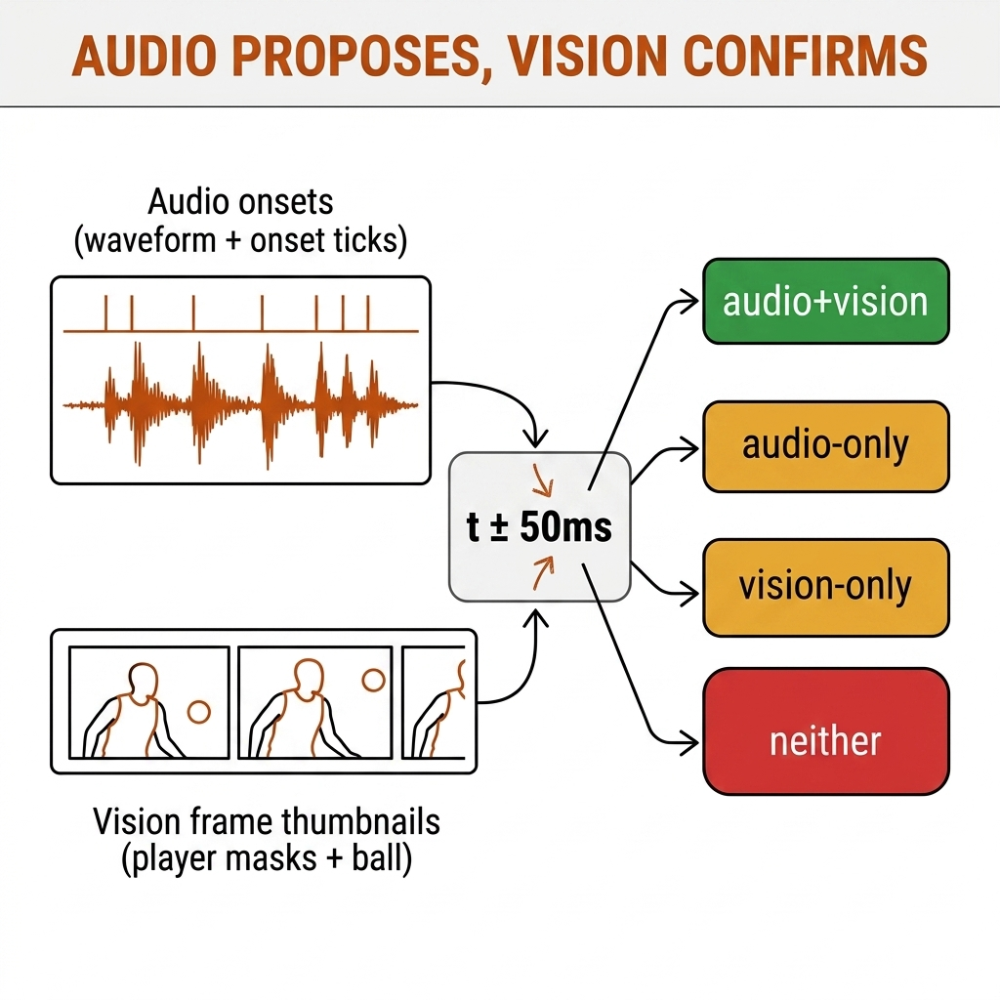
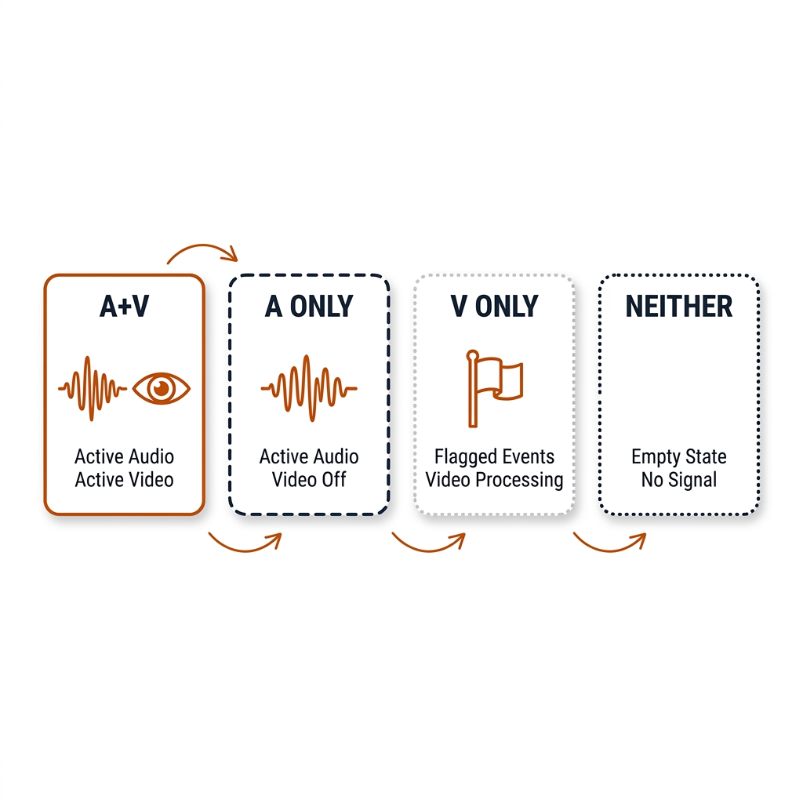
15.6 Sync: The Practical Discipline
The fusion rule lives or dies at the timestamp boundary. Target ±50ms — comfortably inside broadcast A/V-tolerance practice (ITU-R BT.1359 [verify exact ms values]) and fine enough to look up the right frame for any rally event. Sync is a measurement, not an assumption: C04's clock math applies to the audio sample clock as much as the video frame clock, and one clap at each end of the session plus one cross-correlation check per device pair retires the entire risk class for minutes of effort.
| Source | Drift | Fix |
|---|---|---|
| Phone clock | 10-20 ppm ≈ 1ms/min (30min = 30-60ms ≈ 2 frames @30fps) | Loud clap at start and end; compute drift rate, stretch one timeline; re-clap every 15-20min |
| Multi-camera / separate recorder | different clocks, arbitrary offset | Genlock / timecode (pro); clap or flash (amateur); GCC-PHAT cross-correlation (Knapp & Carter 1976) recovers sub-millisecond offset from ambient audio alone — pure NumPy, ✅ M4 |
| Broadcast (nrl-001) | already muxed | Verify once: a visible whistle arm-signal or kick impact should land within a frame or two of its onset |
On the 30s book clips, drift is negligible (<1ms); the protocol matters the day you record a full session. GCC-PHAT is also the load-bearing technique for any multi-mic rig (§15.7) and for marrying a courtside recorder to camera audio in either sport.
15.7 The Industry Pattern: Zenniz's 30-Mic Array
Verified: Zenniz (tennis) combines 30 audio sensors + 4 cameras for ball tracking and line calling, with 25+ countries deployed — the audio-first outlier in a smart-court market that is otherwise camera-only, and evidence the pattern survives commercial reality. The architecture lesson: distributed audio + multi-camera + central fusion. The physics is time-difference-of-arrival (TDoA) multilateration: each mic stamps the impact, and arrival-time differences across the array localize it in 3D. The numbers make it concrete — 1ms = 34.3cm (c = 343 m/s); one sample at 48kHz = 7mm of sound path — so a sample-synchronized sensor ring has physically comfortable headroom for sub-decimeter impact localization [INFERENCE from geometry; Zenniz internals are proprietary]. The cameras then never hunt a 200km/h ball from scratch: audio says when and roughly where the bounce happened; vision confirms IN/OUT at the line. Audio-proposes-vision-confirms is a shipping architecture, not our invention.
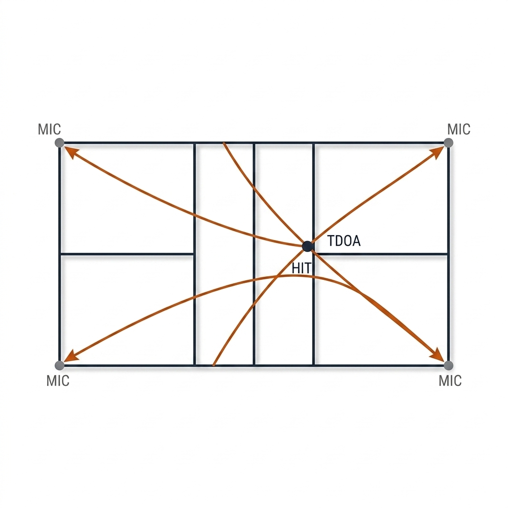
What the book's rig copies at a hundredth of the price: 2–4 USB or phone mics at the court corners, GCC-PHAT-synchronized (§15.6), TDoA-gated to the known court polygon. That gate is also the answer to pickleball's signature confound — an adjacent court's pop is the same event class, spectrally indistinguishable, and only geometry (or vision fusion) can reject it [proposed lab extension, not yet run].
15.8 The Limits Table
| Limit | Mechanism | Consequence / Fix |
|---|---|---|
| HVAC hum | 50/60Hz + harmonics raise the noise floor under everything | Stationary low-band noise; flux-invisible to onset detection; a high-pass filter is the cheap fix. Indoor pickleball: high severity |
| Outdoor wind | Broadband gusts and mic buffeting bury one-shot pops | Wind screens or indoor capture; the pop lives above ~1kHz, so a 200Hz high-pass helps. Outdoor pickleball: high |
| Adjacent-court bleed | Neighbor paddles are the same event class in the same band — spectral features cannot reject them | The pickleball confound — TDoA gating or per-court directional mics; amplitude gating is fragile under phone AGC |
| Whistle ≈ referee verbal | Mic'd referee speech shares harmonics with the whistle band | Spectral flatness + duration separate them; a lane-2 CNN handles supporter whistles and commentary squeals. Rugby: moderate |
| Broadcast compression | Mix compressors flatten amplitude cues; loudness features lie | Onset detection still works; use spectral shape (narrowband ratio, flatness), never raw energy. Rugby broadcast: structural |
| Phone AGC | Automatic gain rescales amplitude between events | A loud crowd can mask a pop and corrupts drive-vs-dink amplitude priors; disable AGC where the app allows, else use relative/spectral features only |
| Tackle impact sub-mixed | Collision thuds sit under commentary and crowd in broadcast mixes [INFERENCE] | Field-mic feature, not broadcast; flag as a gap, not a capability |
| Crowd as proxy | Correlational only — Nevill/Balmer/Williams 2002 found ~15.5% fewer fouls against the home team with crowd noise; COVID ghost games shrank but did not erase home advantage | Crowd pressure on referees is real; crowd→player-performance is equivocal. Context channel, never causal wording |
| Privacy | Venue audio captures bystander speech | Broadcast commentary contains voices — consent and C31 rights apply to re-publication; default to storing events, not raw audio |
15.9 The Audio-Fusion Recipe (Copy This)
- Extract:
ffmpeg -vn -ac 1 -ar 22050WAV (the C15 lab's exact command). - Onset-detect: librosa spectral flux with
backtrack=True; stamp times; threshold on brightness (spectral centroid per window). - Classify by event: whistle (2–4kHz narrowband, sustained, low flatness) vs pop (broadband transient, ~1–2kHz-weighted) vs thud (low-weighted blob) vs crowd (slow broadband bed).
- Sync check: loud clap at recording start and end; measure the A/V offset and drift rate; correct (±50ms target).
- Fuse: at each candidate τ, look at the video frames at τ ± 50ms — vision confirms the event, audio timed it.
- Record only when audio AND vision agree; keep audio-only as a candidate; flag vision-only for review (the two-bit confidence state).
- Escalate to an audio foundation model (Phi-4-multimodal local, Qwen3-Omni on Colab) when the event taxonomy needs semantics — e.g. which call the referee made.
15.10 What I Would Measure Next
- Paddle-pop detection on pb-003's source audio: does each onset align with a contact frame (the E06 state machine input), and does the pop-vs-thud split reproduce on our own footage? Acceptance: every hand-audible pop matched within ±50ms; onset count vs manual rally count.
- Whistle vs crowd classifier on the nrl-001 audio (a small CNN on MFCCs — the honest few-hundred-clip labeling task), with PANNs' zero-shot "Whistle" head as the baseline to beat.
- Multi-mic time-of-arrival: 2–4 phone mics on a pickleball court — can GCC-PHAT-synced TDoA localize the bounce side and reject adjacent-court pops?
- Referee semantics: a Qwen3-Omni pass over nrl-001 whistle windows — "did the whistle blow, and what did the referee say?" — the decision-content layer above the decision-timestamp layer.
15.10b The Audio Toolkit: What to Reach For
The use cases below run on a small, boring toolkit. The rule is the §15.3 escalation ladder in table form: start free and training-free, buy a classifier only for the whistle-vs-confounds problem, and reserve the foundation models for semantics. Every row lists the sport job it actually does.
| Tool | License / M4 | Role in the Stack | Pickleball Use | Rugby League Use |
|---|---|---|---|---|
| librosa (onset_detect, spectral_centroid, RMS) | ISC / ✅ | Lane 1: sample-accurate onsets, spectral-flux transient detection, centroid classification | Pop/thud detection, rally segmentation, drive-vs-dink prior | Whistle-band candidate extraction, crowd-envelope channel |
| GCC-PHAT (Knapp & Carter 1976, pure NumPy) | n/a / ✅ | Sync and TDoA: sub-millisecond offset recovery between devices, multi-mic gating | Corner-mic rig sync; adjacent-court pop rejection | Camera-audio ↔ field-recorder alignment; sideline array |
| MFCC + small CNN (own code; recipe source-backed: MDPI Appl. Sci. 2022, 12(23):12151, CC-BY) | MIT/Apache parts / ✅ infer, Colab train | Lane 2: whistle-vs-confounds classifier (drop MFCC-0 for loudness invariance) | Pop vs hand-clap vs adjacent-court classification | Referee whistle vs supporter whistles and commentary squeals |
| PANNs CNN14 (arXiv:1912.10211) | MIT / ✅ CPU-real-time | Lane 3 baseline: AudioSet 527-class heads — "Whistle", "Crowd", "Applause" zero-shot | Zero-shot pop/bounce class prior for labeling | Zero-shot whistle baseline the lane-2 CNN must beat |
| YAMNet | Apache-2.0 / ⚠️ TF-on-macOS friction [verify ONNX] | Lane 3 edge baseline (MobileNet-depthwise AudioSet classifier) | On-device tagging reference | On-device tagging reference |
| AST (arXiv:2104.01778) | MIT / ⚠️ heavier | Lane 3 attention over spectrogram patches — stronger, costlier embeddings | Shot-type embedding research direction | Broadcast-scene embedding research direction |
| Phi-4-multimodal (5.6B, Feb 2025) | MIT / ⚠️ quantized local, not real-time | Zero-shot audio QA: "did a whistle blow here, and what was said?" | Rally narration over audio windows | Referee-verbal reading fallback (local) |
| Qwen3-Omni (30B-A3B, Sep 2025; successor Qwen3.5-Omni Mar 2026, license [verify]) | Apache-2.0 / ⛔ full, Colab | Joint audio+video semantics — one model that watches and listens | Zero-shot rally QA on fused clips | Whistle-window referee semantics: the call, not just the timestamp |
15.10c The 10 Use Cases: Applied Framework
Everything above is machinery. This section is where it earns court time: ten concrete jobs, grouped into four categories — pickleball contact events (UC 01–02), rugby league decisions and impacts (UC 03–05), the fusion layer (UC 06–08), and rigging with honest limits (UC 09–10). Each use case states the practical problem, the exact mechanism and math, a figure, the pickleball and rugby league applications, and who collects the payoff. The starting skeleton for every contact-event case is the same dozen lines:
import librosa, numpy as np
y, sr = librosa.load("match.wav", sr=22050, mono=True) # the §15.9 extract
onsets = librosa.onset.onset_detect(y=y, sr=sr, backtrack=True,
units="time") # sample-accurate t
S = np.abs(librosa.stft(y))
cent = librosa.feature.spectral_centroid(S=S, sr=sr)[0] # pop vs thud vs tone
for t in onsets: # the fusion contract
window = video.frames(t - 0.050, t + 0.050) # ±50ms, §15.6 budget
emit_event(t, confidence=two_bit(onset=t, vision=window))Category I: Pickleball Contact Events (UC 01–02)
UC 01 — Paddle-Pop Contact Timing (the Vision Problem Audio Already Solved)
The practical problem: the pb-003 manual contact review confirmed 0 of 6 contacts from still frames (measured) — vision cannot time a kitchen-line contact on this fixture, full stop. The mechanism is lane 1: spectral flux measures frame-to-frame magnitude change, S(n) = Σk max(0, |X(n,k)| − |X(n−1,k)|), spiking on the pop regardless of the venue's noise floor; backtrack=True snaps the detection to the local energy rise, recovering the true contact instant. The math that matters is timing density: 44.1kHz stamps the event to 0.023ms against 30fps video's ±16.7ms quantization — roughly 1,500× denser, with no occlusion, homography, or model in the path. The pop band itself (~1–2kHz prominence) is community-noise literature until §15.10 measures it on pb-003 [verify].
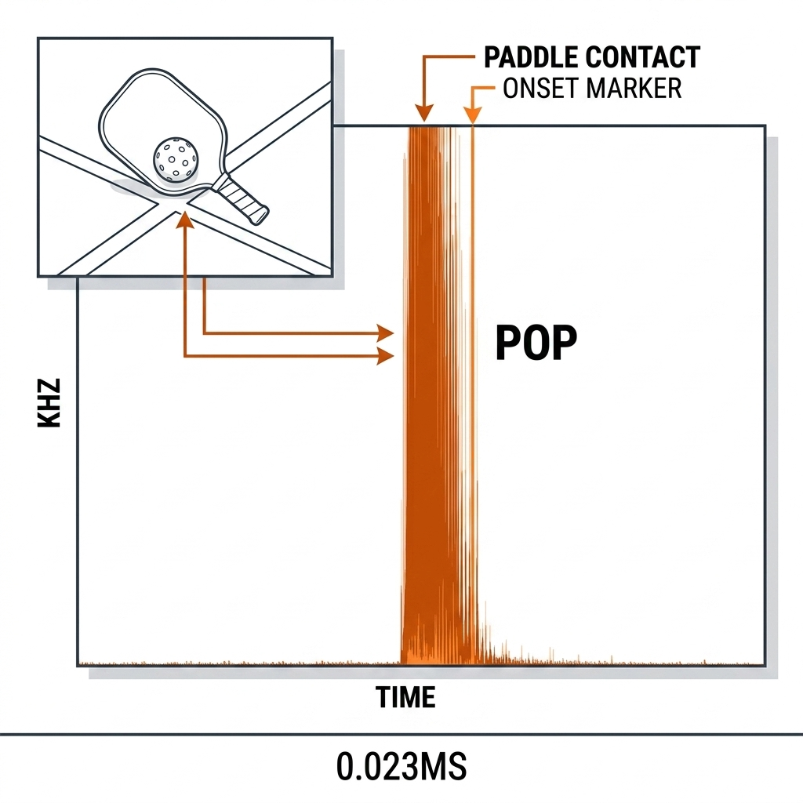
Payoff: officiating and coaching — contact timestamps enter the C10 event log at zero vision cost, converting an unsolved detection problem into solved signal processing.
UC 02 — Ball-Bounce Detection (the Second Transient)
The practical problem: the two most important rally events — paddle contact and ball bounce — are the same ball, same second, same impulsive family; a pipeline that cannot split them cannot score the two-bounce rule or localize a kitchen-fault review. The mechanism is spectral, and tractable because the physics differ: the bounce is lower-weighted energy with a softer attack and less high-frequency content. The discriminating features per onset are peak flux, spectral centroid C(n) = Σ f·|X| / Σ |X|, and decay time; on a spectrogram the pop is a tall stripe and the thud a low blob. Both bands await the pb-003 lab pass before shipping unhedged [verify].
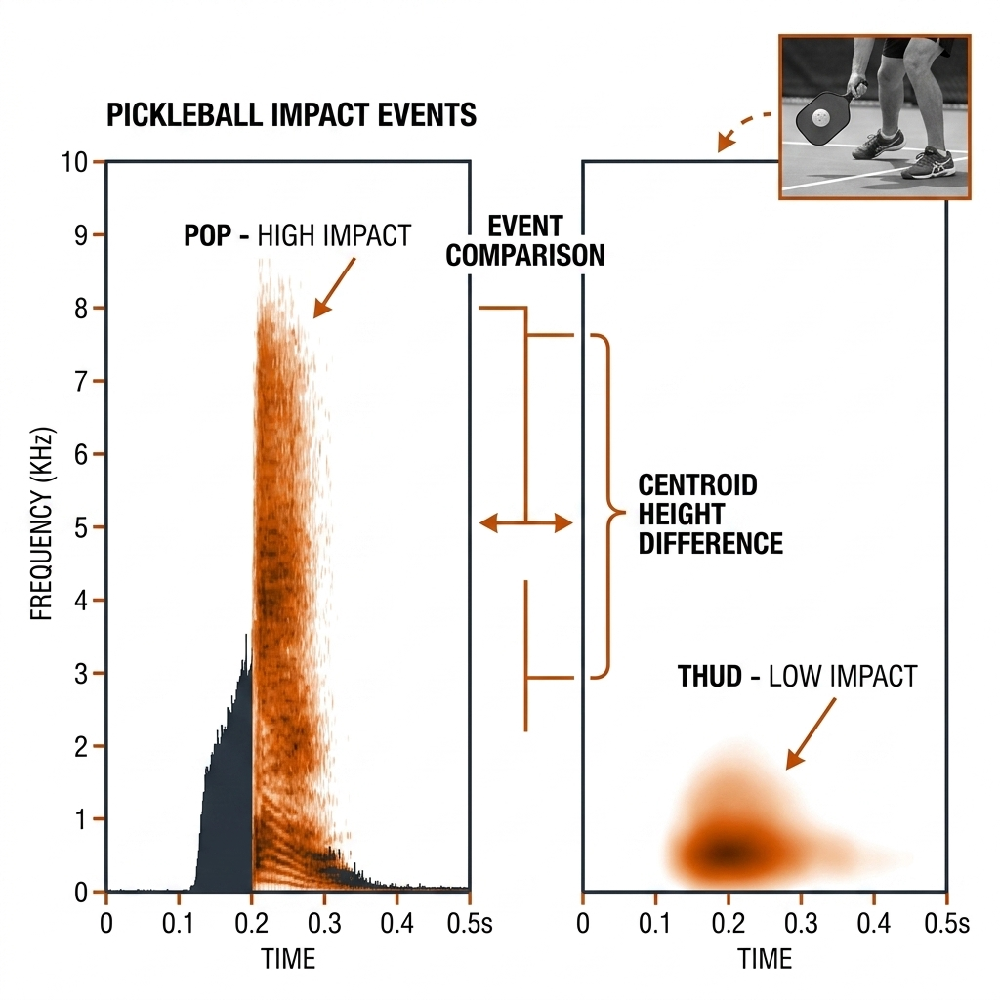
Payoff: rally state machines — the C19 eventing layer gets bounce boundaries without asking ball tracking to survive the E04 wall.
Category II: Rugby League Decisions & Impacts (UC 03–05)
UC 03 — The Referee Whistle: A Decision Clock for 80 Minutes
The practical problem: an 80-minute broadcast is one long PTZ video, and every downstream vision job wants stoppage boundaries it currently has to find by pixels. The whistle is the boundary — every knock-on, penalty, six-again, and half-time is whistle-anchored, and NRL referees are mic'd for broadcast so the tone sits hot in the mix. The lane-1 mechanism: narrowband energy ratio (2–4kHz band energy over total [verify per whistle model]), spectral flatness SF = exp(mean(log|X|)) / mean(|X|) — a whistle is tonal, so SF is low where crowd roar is noise-like and high — plus duration 0.3–1s. The lane-2 escalation is the source-backed recipe (MDPI Applied Sciences 2022, 12(23):12151, CC-BY): MFCC + Δ-MFCC with MFCC-0 dropped for loudness invariance, into a small CNN that rejects supporter whistles and commentary harmonics. Hand-label onsets; the literature's known trap is weak clip-level labels.
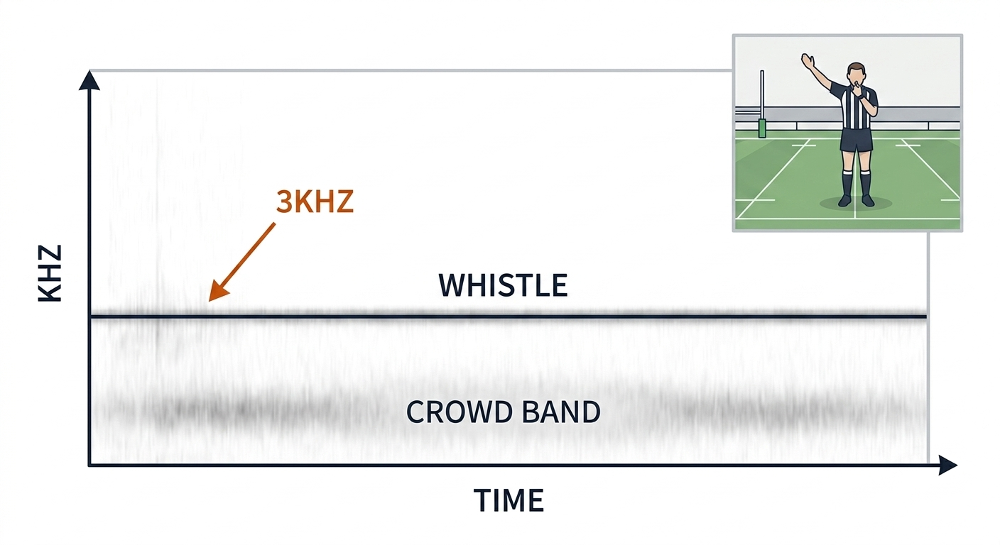
Payoff: the largest compute saving in this chapter — whistle-window scoping cuts the vision workload for C09 re-tracking, tackle detection, and PTB speed to the minutes that matter.
UC 04 — Crowd Swell: The Energy State, Not an Event
The practical problem: review prioritization and highlight selection need a salience signal, and the venue is already shouting it. The mechanism is the third acoustic family: a slow broadband bed whose RMS envelope, low-passed at the 0.1Hz scale, swells with moment salience — line breaks, tries, goal-line stands, firefight endings. The math is deliberately boring: E(t) = LPF(RMS), flag a swell when E crosses a venue-relative percentile. The honesty is the feature: crowd audio modulates, never triggers. The evidence supports crowd→referee bias (Nevill, Balmer & Williams 2002: ~15.5% fewer fouls against the home team with crowd noise, source-backed; COVID ghost games shrank but did not erase home advantage — Reade & Singleton) while crowd→player-performance remains equivocal. Causal wording is banned in every claim.
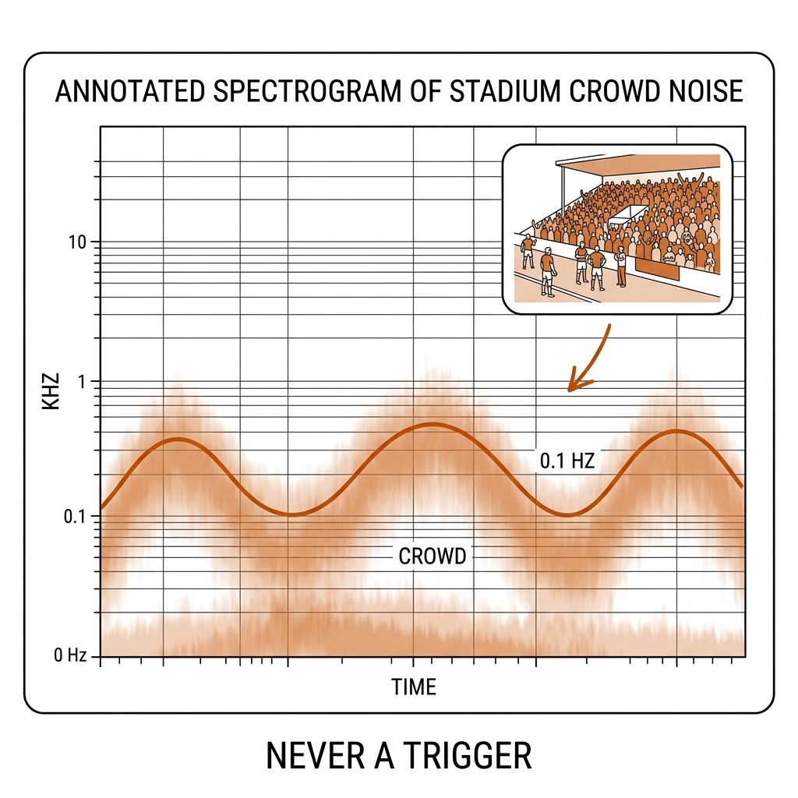
Payoff: editorial and review triage — the C28 cockpit and highlight pipeline get a salience channel that costs one envelope computation and zero causal claims.
UC 05 — Tackle-Impact Detection (the Field-Mic Event)
The practical problem: the collision fans and welfare staff care about is visible only as a pile of bodies — vision sees a ruck forming, not the impact instant. The mechanism is UC 01's transient detector one weighting down: a tackle thud is a broadband impulse with more low-frequency mass, so flux plus a low-band ratio extracts it on field-side microphones. The honest boundary belongs in the mechanism sentence: in the broadcast mix the same thud is sub-mixed beneath commentary and crowd [INFERENCE] — this is a venue-mic feature, not a broadcast one, and UC 10 exists to say so. Where a field mic or referee-adjacent feed exists, the detected impact hands C11 pose a collision frame and C30's IMU streams a cross-check timestamp.
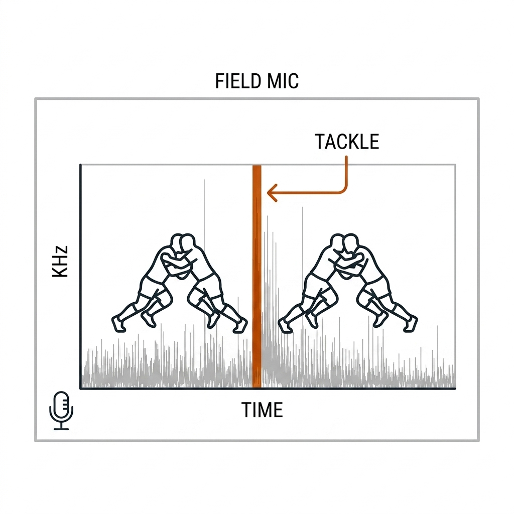
Payoff: player welfare — collision counts and timestamps for load management, scoped honestly to rigs that carry a field mic.
Category III: The Fusion Layer (UC 06–08)
UC 06 — Kitchen-Firefight Audio: Rally Tempo at 250ms
The practical problem: a kitchen firefight is a burst of sub-250ms exchanges that 30fps video smears into ambiguity — the exact scenario where E04's detector wall and frame quantization compound. The mechanism needs no new detector, only a new reading of UC 01's output: inter-onset intervals. IOIn = tn+1 − tn; a firefight is a run of IOIs below a tempo threshold (~400ms [verify — practitioner threshold, pending pb-003 measurement]), and the IOI distribution inside the burst is the hand-speed curve. The same clustering segments ordinary rallies: pops chained below a gap threshold form a rally, and the first onset after the longest gap is the serve.
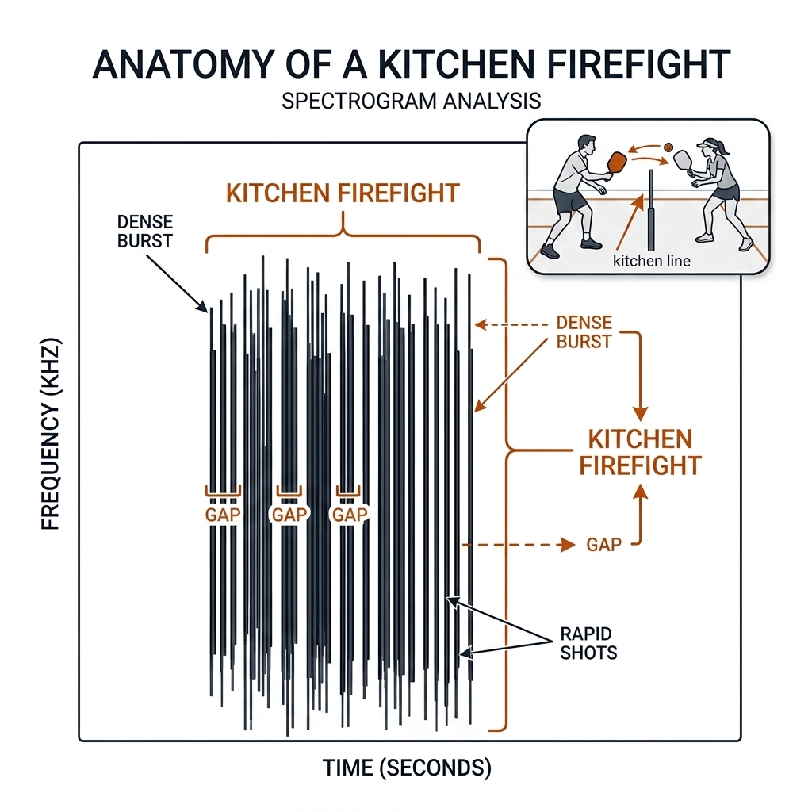
Payoff: coaching — quantifies the drill that decides kitchen battles, from a sorted list of floats instead of a tracking pipeline.
UC 07 — Audio-Video Fusion: the Multimodal Join
The practical problem: audio knows when with no semantics; vision knows what, who, where with ±16.7ms timing and an occlusion problem. Neither is believed alone for a claim that feeds the event log. The mechanism is the chapter's spine as an algorithm: onset at t proposes; vision confirms inside W = [t − 50ms, t + 50ms] using the book's own verified machinery — the E10 temporal-diff ball cue (0.814 precision, measured) or an E03 pose-velocity spike at the contact limb. The asymmetry is load-bearing: reversing the direction forces the ball detector past its demonstrated wall (median confidence 0.11, measured) before the one-dollar sensor votes. Vision is spent only where it is strong — a ±50ms crop with C09 tracking context already warm.
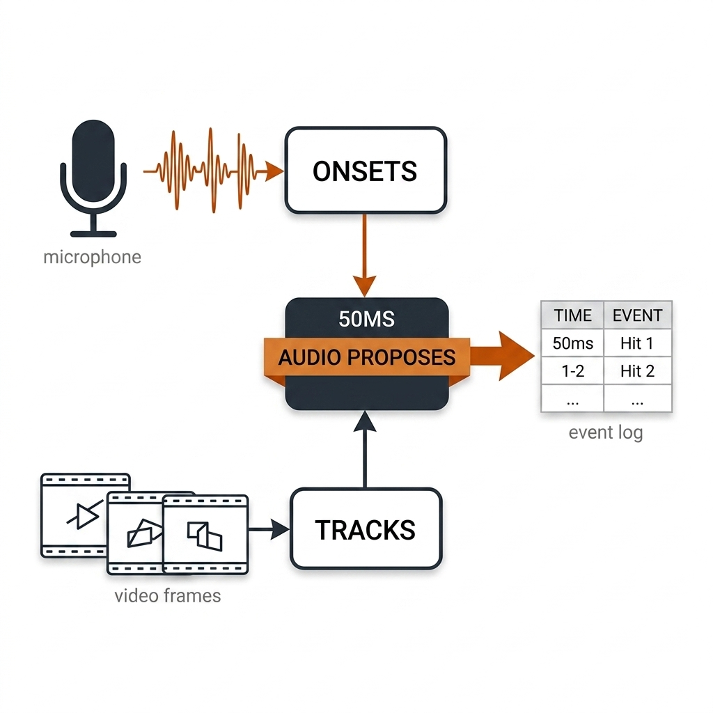
Payoff: the C10 event log upgrades from vision-only guesses to corroborated events — the difference between a highlights guess and an officiating record.
UC 08 — Audio Event Confidence: the Two-Bit Policy
The practical problem: fusion output needs a policy for the frequent case where only one modality fires — silence is information too. The mechanism is a two-bit confidence state attached to every candidate: audio+vision is a full-confidence event feeding shot attribution (C10); audio-only stays a candidate — and is not a failure, because E04 (measured) says the ball is often invisible, so absent visual confirmation is weak negative evidence; vision-only is suspicious — a missed pop or a visual false positive — and is flagged for review; none marks the silence segments between rallies, itself useful for rest-period statistics. The construction is the book's own [verify against C10's attribution slots]; it earns its place when the §15.10 labs show the split behaving as claimed on pb-003.
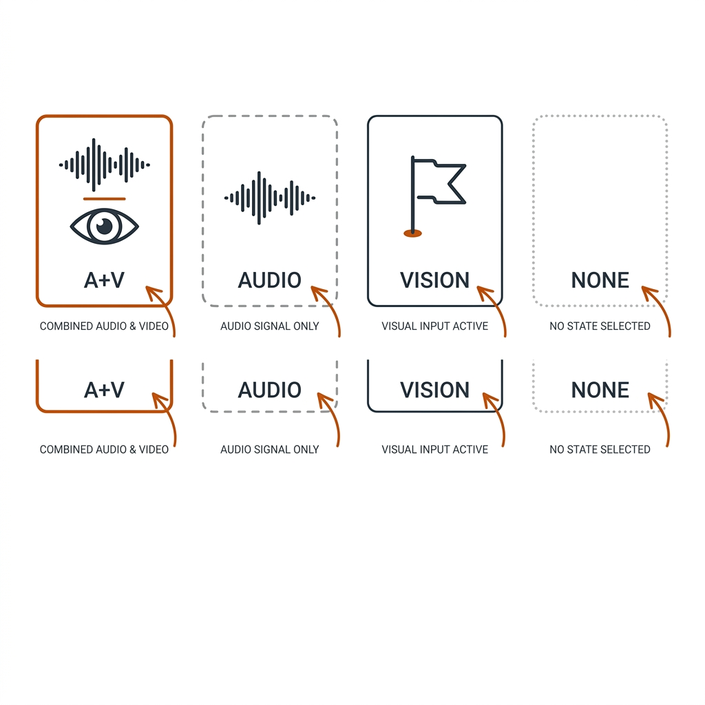
Payoff: downstream analytics honesty — C21 ratings and C22 EPV can weight every event by its confidence state instead of treating all rows as equal.
Category IV: Rigging & Honest Limits (UC 09–10)
UC 09 — Mic Placement: the One-Dollar Rig That Fixes Geometry
The practical problem: one microphone timestamps but cannot locate — and cannot reject pickleball's signature confound, the adjacent court's pop, which is the same event class in the same band. The mechanism is geometry, not spectral cleverness: 2–4 USB or phone mics at the court corners, GCC-PHAT-synchronized to sub-millisecond from ambient audio alone (Knapp & Carter 1976, pure NumPy), then TDoA-gated against the known court polygon — an arrival-time difference outside the possible range is a foreign pop. The numbers set the headroom: c ≈ 343 m/s, so 1ms of TDoA error is 34.3cm and one 48kHz sample is 7mm of sound path — sub-decimeter localization is physically comfortable [INFERENCE from geometry]. This is the Zenniz pattern (30 audio sensors + 4 cameras, verified zenniz.com) at a hundredth of the price [proposed lab extension, not yet run].
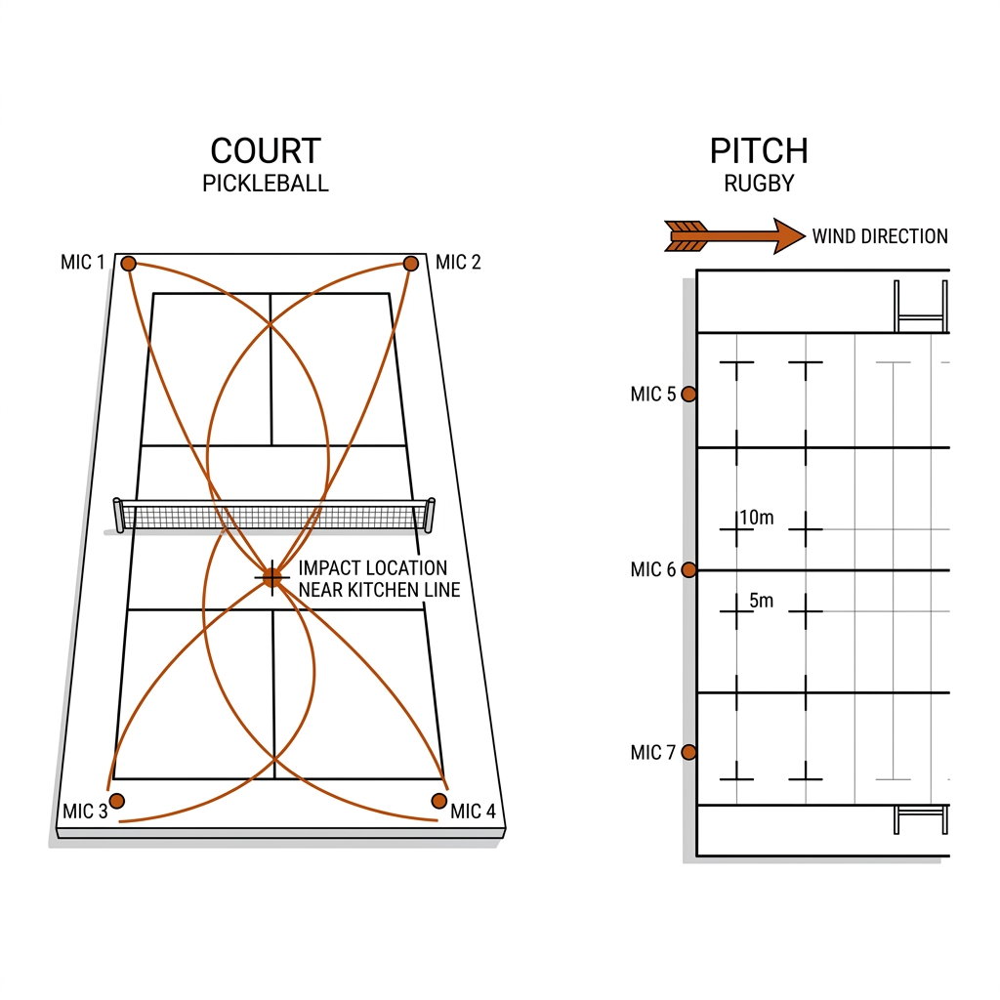
Payoff: the cheapest hardware upgrade in the book — a few dollars of microphones retiring a confound no classifier can solve.
UC 10 — Broadcast-Mix Separation: the Honest Limit
The practical problem: broadcast audio is not venue audio. It is a produced mix — commentary ducked over crowd, compressors flattening amplitude — and the events a fan most wants (the tackle thud) are sub-mixed beneath both [INFERENCE]. The mechanism is disciplined feature choice plus a scoped ambition: loudness features lie under compression, so whistle detection runs on spectral shape (narrowband ratio, flatness, duration) and the crowd channel runs on envelope shape; source-separation models (demucs-class) could in principle unmix stems, but sport-specific performance is unestablished [verify]. The honest engineering answer for tackle audio is not a better separator — it is a different microphone (UC 09). What broadcast audio can deliver is already large: the whistle clock (UC 03) and the crowd state (UC 04), both measured-feasible on nrl-001's lane-1 pass (107 onsets in 20s, the 4103Hz transient class).
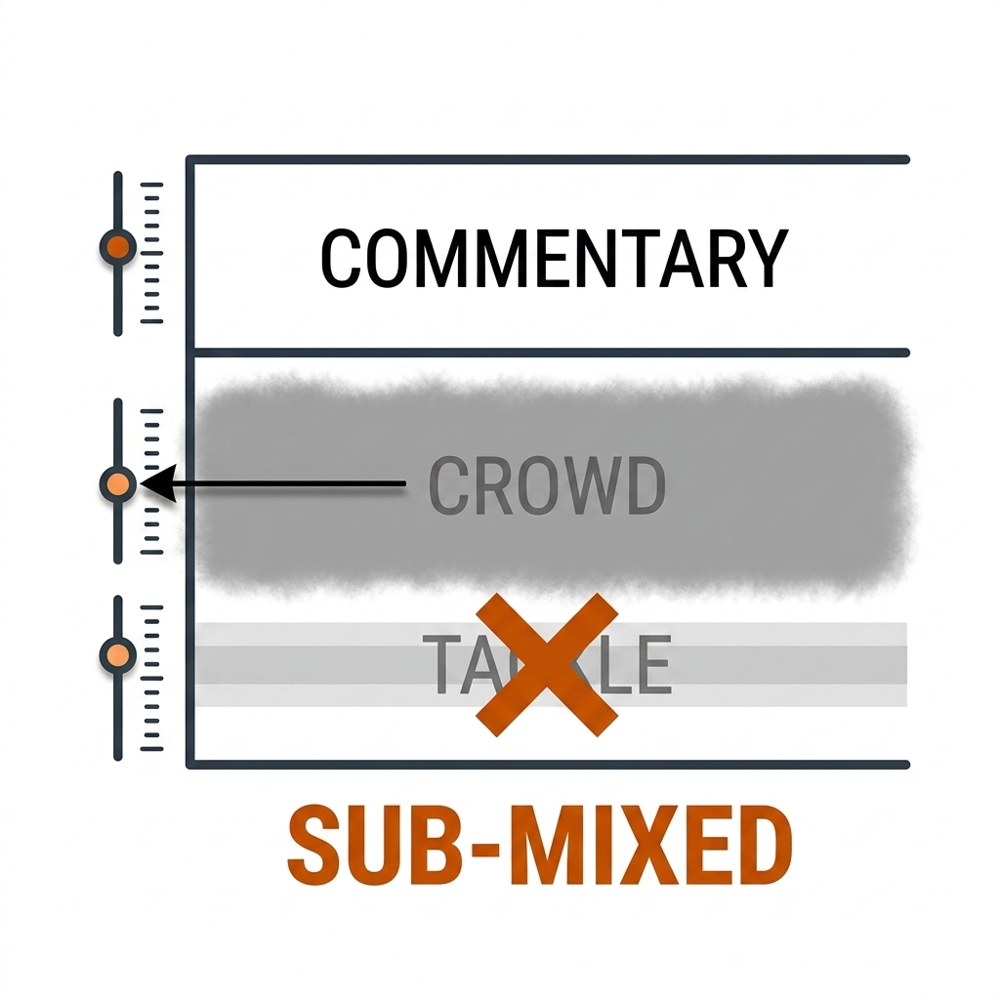
Payoff: scope discipline — the chapter's claims stay inside what each audio source can honestly deliver, which is what keeps the rest of the pipeline believable.
15.10d What This Adds to the Pipeline
The ten use cases are one sensor read ten ways, and each feeds an existing chapter rather than starting a project. UC 01–02 and UC 06–08 populate the C10 event log with corroborated contacts and bounces, scoped by the UC 08 confidence states that C21 ratings and C22 ΔEPV weight; UC 03's whistle windows are the compute budget for C09 re-tracking and C19 eventing in the rugby arm; UC 04's crowd channel modulates C28 cockpit review priority; UC 05 and UC 09 hand C11 pose collision frames and C30 IMU streams their sync timestamps; UC 07's ±50ms join is the C16 video-understanding alignment budget; and UC 10 keeps every one of those claims inside the honesty boundary C31's rights-and-consent framing expects. The sync discipline underneath all of it is C04's clock math, measured rather than assumed.
15.11 Sources
- librosa (ISC) onset/spectral methods — librosa.org; PANNs CNN14 (MIT, arXiv:1912.10211); YAMNet (Apache-2.0, TF Hub); AST (MIT, arXiv:2104.01778); Phi-4-multimodal / Qwen3-Omni (audio-first models — license check before use).
- CNN whistle detection: MDPI Applied Sciences 2022, 12(23):12151 (CC-BY, mdpi.com/2076-3417/12/23/12151). Crowd/referee evidence: Nevill, Balmer & Williams 2002 (Psychology of Sport and Exercise); Reade & Singleton closed-doors analysis.
- Zenniz (zenniz.com, verified 2026-08-30) — 30-audio-sensor + 4-camera smart court; internals proprietary. Sync: GCC-PHAT (Knapp & Carter 1976); ITU-R BT.1359 broadcast A/V tolerance [verify exact ms].
- Lab:
lab/w3_lab_audio.py→experiments/c15-audio/outputs/metrics.json(107 onsets/20s; 4103Hz transient class — measured).